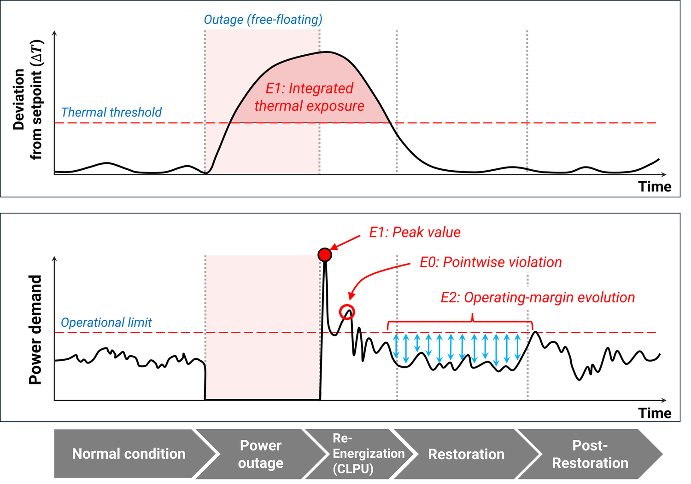

Review Under review
Building–Grid Restoration as a System Trajectory: A Review of Modeling, Evaluation, and Decision Structures
Building–grid restoration is a dynamic process in which outage-conditioned building states, recovering demand, and grid operating constraints evolve together. Similar endpoint or aggregate outcomes can therefore conceal differences in recovery duration, sequence, physical stress, and remaining operating capability. This review examines how such information is represented, evaluated, and used in decision-making across 108 studies.
Restoration as a system trajectory
Three physically linked mechanisms
Outage-conditioned building thermal states influence synchronized load reactivation and cold load pickup (CLPU), and the resulting demand evolves within feeder, voltage, and equipment-loading constraints.
![Two stacked panels over the stages normal condition, power outage, re-energization (CLPU), restoration, and post-restoration. Upper panel: indoor temperature deviation from setpoint rises during the outage, higher for a building with a shorter thermal time constant, and decays after re-energization, more slowly for a longer time constant. Lower panel: power demand drops to zero during the outage, spikes outside the admissible region at re-energization, and later shows a thermally driven secondary activation near the admissible boundary.](img/restoration-dynamics.png)
Findings
Each study was classified on four TCED dimensions: Time Continuity, Cross-Domain Coupling, Evaluation Paradigm, and Decision Structure. The levels are not a hierarchy of study quality.
| Dimension | Level 0 | Level 1 | Level 2 |
|---|---|---|---|
| Time continuity | 11 | 19 | 78 |
| Cross-domain coupling | 96 | 10 | 2 |
| Evaluation paradigm | 7 | 78 | 23 |
| Decision structure | 97 | 5 | 6 |
Number of the 108 reviewed studies at each TCED level.
1Dynamic modeling did not imply path-sensitive evaluation
Among 78 studies that propagated restoration states over time, 55 used pointwise or aggregate evaluation without retaining an explicit path characteristic.
2No study combined path-sensitive evaluation with adaptive decisions
All 23 studies with path-sensitive evaluation used predetermined plans or fixed rules, while the 11 studies using state-informed replanning or closed-loop policies updated actions mainly from current states and pointwise feasibility conditions rather than violation duration, accumulated exposure, or trajectory history.
Takeaway
When restoration-path information matters


Path information becomes relevant to evaluation when:
- prior conditions remain embedded in later states,
- duration or sequence rather than magnitude changes a consequence, or
- the preceding path alters remaining capability.
To influence decisions, such information must also be available or predictable when candidate actions are evaluated and capable of changing the selected action.
Study details
- Corpus: 108 studies from the Web of Science Core Collection and a supplementary Google Scholar search · English-language publications, 2016–2025
- Coding: two authors independently classified all studies on the four TCED dimensions; disagreements were resolved by consensus
- Scope: distribution-system restoration processes in which building interactions are significant